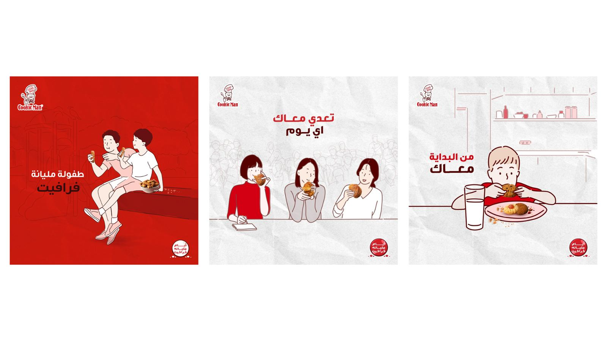
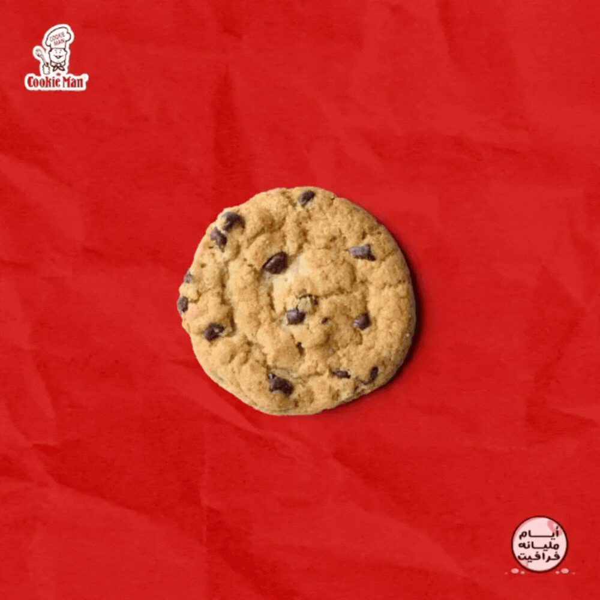
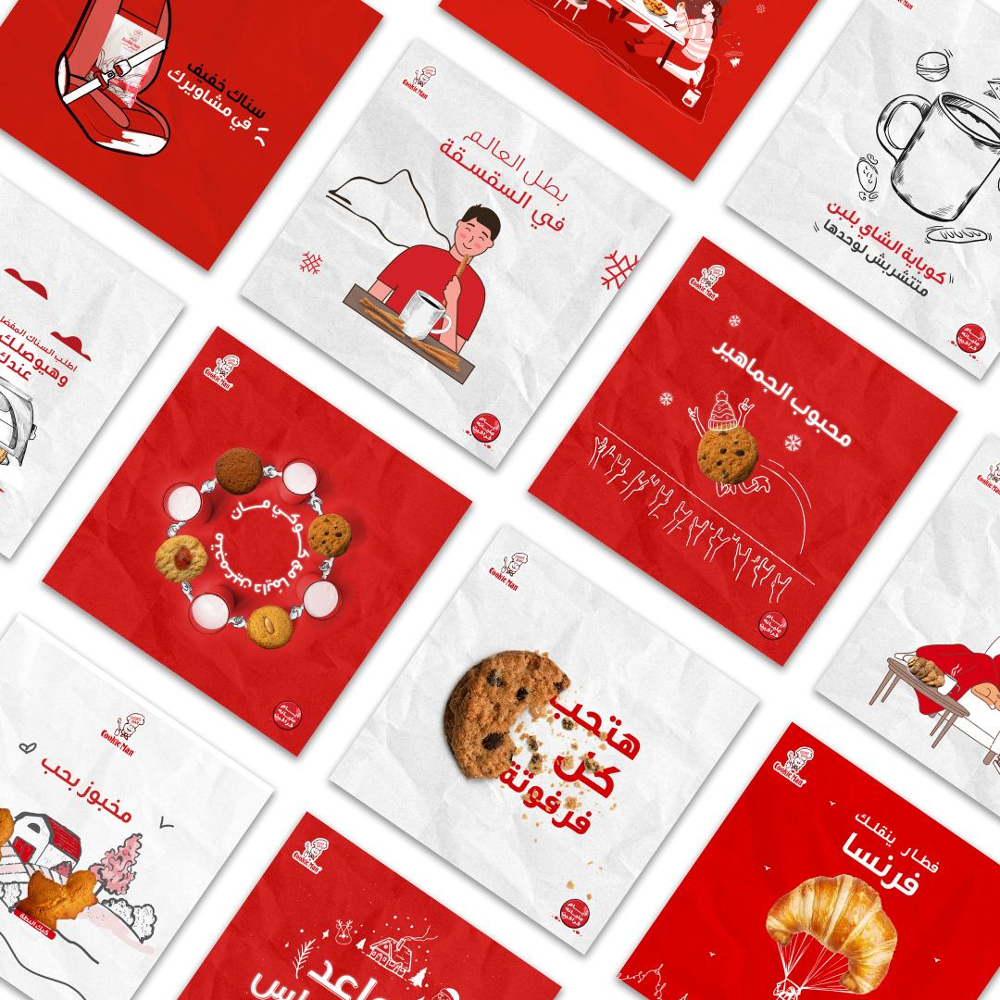

Cookie Man is one of Egypt's oldest bakeries offering cookies, bakery, and oriental sweets — with a very low digital marketing budget.
How can Cookie Man leverage its 35th anniversary to strengthen brand awareness and loyalty with a low-budget campaign?
Many customers view bakery products as commonplace, not associated with special memories or emotional connections.
People have strong nostalgic connections with food — especially sweets — reminding them of joyful moments, holidays, and family gatherings.
Connect the flavors of Cookie Man's products with cherished memories. كل واحد فينا بيحب الطعم اللي بيفكره بحاجة تفرحه... احتفلوا معنا بـ35 سنة من الفرحة.
a celebration of 35 years of joyful memories. عشان مع كل فرفوتة.. تفتكر فرحة كل حدوتة
Step 1: emotionally-driven social campaign centered on Cookie Man's journey alongside you over the years. Step 2: consistent cute content reinforcing that Cookie Man is constantly by your side.



This campaign holds a special place in my heart — my first featured campaign on Ads of the World.